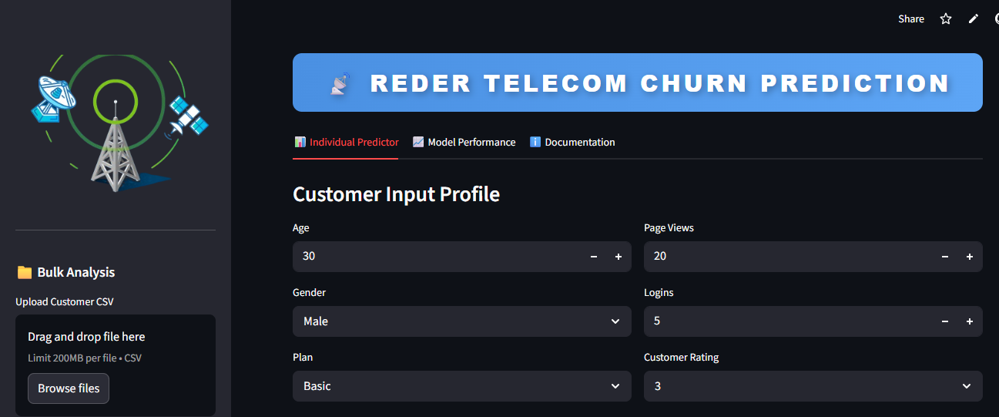

This is a data-driven banking analytics project integrating Data Science and Business Intelligence (BI) to predict customer churn, analyze creditworthiness, and enhance retention strategies for Veritas Bank.
The system uses machine learning to identify high-risk customers and provides an AI-powered Chatbot and Power BI Assistant that allows management to query churn data using natural language.
This report provides an in-depth analysis of Reder's customer churn trends. The analysis, based on a dataset of 10,000 customers, reveals an overall churn rate of 13.9%. While the bank maintains a stable portfolio, this attrition represents a significant loss of potential value.
Clear risk patterns were identified among customers with lower credit scores, lower balances (below £30k), and short tenures. By deploying the strategies outlined in this report, Veritas Bank can reduce churn by an estimated 25% and significantly improve customer lifetime value.
Geography: France holds the largest customer base (50%), followed by Germany (25%) and the UK (25%). However, Germany exhibits the highest churn rate at 16.2%, compared to 14.5% in France and 11.3% in the UK.
Age Dynamics: The majority of customers fall within the 26-45 age range. However, younger customers (18-35) show a higher churn propensity (19%), likely due to lower brand loyalty and higher mobility.
Credit Scores: 54% of customers have "Poor" or "Fair" credit scores. This segment aligns with higher churn risk. Conversely, the "Excellent" credit segment shows high stability.
Balance Impact: Customers with balances under £30,000 (32% of base) are highly volatile. Interestingly, a small but high-value segment with balances >£100,000 also requires personalized retention to prevent significant capital flight.
Engagement: "Low Engagement" customers (holding only 1 product) account for 47% of the base and are the most vulnerable to churn. Inactive members are twice as likely to churn as active ones.
To support decision making, I integrated a Google Gemini powered assistant. Managers can query the data directly:
Action: Launch personalized loyalty programs for the 19% of customers identified as "High Risk" (Poor credit + Low balance).
Action: Encourage multi-product adoption (e.g., bundle offers) since customers with >2 products show significantly higher retention.
Action: Focus retention efforts on customers in their first 2 years (New tenure category) with welcome offers and financial education.
Action: Investigate the specific causes of high churn in Germany (18.06%) and deploy localized engagement campaigns.
The Veritas Bank analysis confirms that while the portfolio is stable, a vulnerable segment exists. By pivoting to a data driven retention strategy specifically targeting product engagement and early tenure support Veritas Bank can reduce churn by up to 25% and significantly strengthen long-term profitability.